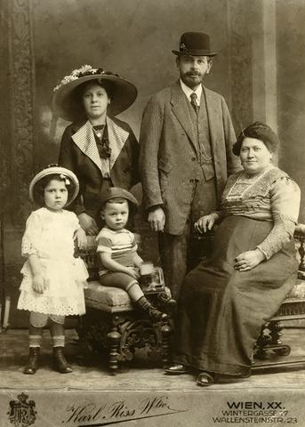

Jochil Hecht
1867–1952
Life Story
Jochil had served in the Austrian army 3 times, once as a prison guard. He was a soldier for Austria in WWI. Because he was a veteran, he figured he was safe from the Nazis and didn’t want to leave Vienna. His children convinced him to come to America after the Nazis made him scrub a sidewalk with a toothbrush.
When he moved to America, he went to Temple everyday; he lived alone, spoke no English. He shopped for food by going to the store and pointing to what he wanted.
On his deathbed, Jochil asked for a razor and mirror. He had never seen his face unshaven. He shaved off his beard to see what his face looked like. Someone asked if he regretted it, he had a funny reply. He answered the question with a question. Like. "Would I be lying if I say yes?"
Life events
| Hebrew Name | 1867 · Yehiel Michel bar Hersch The Michel was found on his son, Josef's, gravestone. |
|---|---|
| Born | 8 Aug 1867 · Zolochiv, L'viv, Ukraine Map |
| Married | 8 Sep 1891 · Adele Schapira · Zolochiv, L'viv, Ukraine Map |
| Lived | 21 Aug 1905 · 1020, Hanovergasse 8, Vienna, Austria Map · Per Maximillian's birth record. |
| Lived | 29 Jun 1908 · 1200 Romanogasse 12-14, Vienna, Austria Map · Per Rose's birth record & sister, Lea's arrival manifest |
| Lived | 16 Oct 1910 · 1200 Hirschvogelgasse 3, Vienna, Austria Map · Per Sigfried's, birth record. |
| Lived | |
| Departure | 20 Jul 1938 · Le Havre, Manche, Basse-Normandie, France Map |
| Arrival | 26 Jul 1938 · Manhattan, New York Map |
| Lived | 1 Apr 1940 · 3264 East 139th St, Cleveland, Ohio Map · Age: 72; Marital Status: Widowed; Relation to Head of House: Father-in-law  |
| Died | 20 Apr 1952 · 3264 East 139th St, Cleveland, Ohio Map · Name: Hecht, Yochiel
Date: Apr 23 1952
Source: Cleveland Press, Reel #116
Notes: Hecht, Yochiel, husband of the late Adela, beloved father of Joseph, Jacob, Fred, Mrs. Sadie Bodek, Mrs. Clara Altchouler, and Mrs. Rose Weiss, dear grandfather, and great-grandfather. Services at Berkowitz & Son Inc. Funeral Chapel, 818 E. 105 St., Tuesday, Apr. 22, at 1 p. m. Interment Glenville Cemetery. Please omit flowers. Family at the home of Jacob Hecht, 3351 Glencairn Rd., Shaker Heights.  |
| Buried | 22 Apr 1952 · Glenville Cemetery, 13009 Shaw Ave, Cleveland, Ohio Map · Section K Row 5 |
Family
 Sadie Hecht1892–1978
Sadie Hecht1892–1978- Joseph Elliot Hecht1894–1954
 Jacob Hecht1896–1988
Jacob Hecht1896–1988- Clara Hecht1899–1981
 Hersch Hecht1900–1901
Hersch Hecht1900–1901 Reuven Szymon Hecht1903–1903
Reuven Szymon Hecht1903–1903 Maximilian Hecht1905–1906
Maximilian Hecht1905–1906 Rose Hecht1908–1982
Rose Hecht1908–1982- Sigfried 'Fred' Hecht1910–1982
Photos
Adele Schapira
Jochil Hecht
Adele Schapira
Jochil Hecht
Clara Hecht
Sigfried 'Fred' Hecht
Rose Hecht

Jochil Hecht
Sigfried 'Fred' Hecht

Jochil Hecht
Rose Hecht
Jochil Hecht

Jochil Hecht
Jochil Hecht
Robert Weiss
Rose Hecht

Jochil Hecht
Jochil Hecht